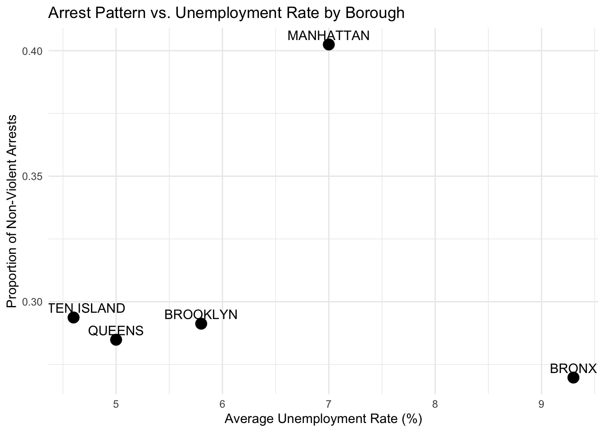

A 538-style deep dive into who gets arrested where — and why unemployment might explain part of the story.
In New York City, not all arrests are created equal. Even when it comes to non-violent offenses, who gets arrested — and where — reveals deep patterns of racial and economic inequality.
A Pattern in the Data
Over the course of this semester, we analyzed NYPD arrest data merged with unemployment data from the American Community Survey. Our findings? The same kinds of crimes are treated very differently depending on the borough — and depending on the suspect’s race.
One particularly stark result: Black and Hispanic individuals in the Bronx and Brooklyn are far more likely to be arrested for non-violent crimes compared to those in other boroughs, even when accounting for population.
What Counts as “Non-Violent”?
We focused on crimes labeled as petty theft, trespassing, misdemeanor drug possession, and disorderly conduct. These aren’t serious crimes — and they often don’t lead to jail time. But they can have lasting effects: fines, job loss, and even housing instability.
The data suggests that unemployment and economic precarity might be driving up both police presence and arrests in high-poverty neighborhoods.
A Visual Breakdown
── Attaching core tidyverse packages ──────────────────────── tidyverse 2.0.0 ──
✔ dplyr 1.1.4 ✔ readr 2.1.5
✔ forcats 1.0.0 ✔ stringr 1.5.1
✔ ggplot2 3.5.1 ✔ tibble 3.2.1
✔ lubridate 1.9.4 ✔ tidyr 1.3.1
✔ purrr 1.0.2
── Conflicts ────────────────────────────────────────── tidyverse_conflicts() ──
✖ dplyr::filter() masks stats::filter()
✖ dplyr::lag() masks stats::lag()
ℹ Use the conflicted package (<http://conflicted.r-lib.org/>) to force all conflicts to become errors

Figure 1
Explore the Data
Want to see the patterns yourself? The interactive dashboard below lets you filter by borough, offense type, and race to explore the distribution of arrests across the city.
Shiny applications not supported in static R Markdown documents
What This Means
Our analysis doesn’t say policing alone causes inequality — but it does highlight how police data reflects broader social trends. The sharp racial disparities and their alignment with economic stress are hard to ignore.
The Bottom Line
The geography of non-violent arrests in NYC isn’t random. It mirrors structural inequality in housing, employment, and community investment. We hope this work adds another layer to the public conversation about justice and fairness.